Oliver Bruhn Lyngaa Wegeberg · Cand.merc. (MSc in Economics and Business Administration) and AI-first developer · LinkedIn
CameleonProof: proofing packaging artwork with AI agents and plain code
During my master's thesis I saw that proofing packaging ties up a lot of specialist time at a design agency, and I proposed building a system for the task. I owned the problem, the requirements, the decisions and the verification. AI coding agents wrote the code. This page shows the whole journey, including what did not go to plan.
automated test cases in version 1. Tests decide what reaches the server
food-labelling rules had never triggered their fail branch. My own audit found it
barcode rules caught an inserted error in a test with synthetic error files
rule areas built as skills in version 2, each with primary sources and blind tests
The numbers describe my own system. The agency's internal figures and client data are not shown.
1 · The problem
Proofing is specialist work under time pressure
Before packaging artwork goes to print, it is proofread. Is the barcode big enough and far enough from the cut line? Is the quantity printed in large enough figures, and is the ℮-mark correct? Are the allergens emphasised? The rules live in EU regulations, Danish executive orders, the GS1 standard and the clients' own manuals.
An error that slips through is found only after printing. An error caught late costs an extra proofing round that pulls both designer and proofreader away from other work. Management estimates that the agency proofs several hundred packaging designs a year, at about an hour each. That is an estimate, not a measured saving.
I wrote my master's thesis at the agency on pricing in creative firms and combined several years of project, time and accounting data in Python. The thesis ended in a pricing framework that management uses today. While working with the data I saw another pattern: proofing was a recurring task, and much of it consisted of checking things that are written down as rules. That was outside the thesis, so I proposed a new project myself.
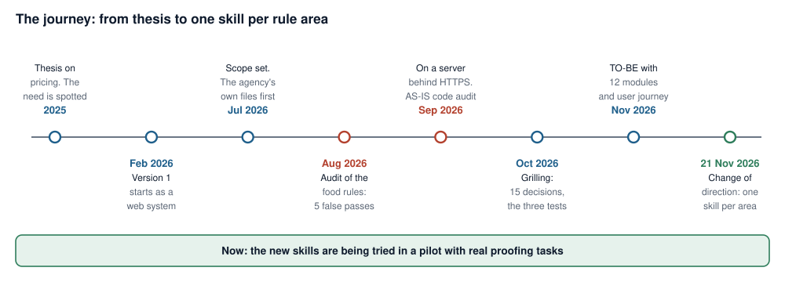
2 · The analysis
Data first, then requirements
Before and during the build I used the agency's own data to understand the task:
- Time registrations on proofing tasks, linked to projects, to test management's estimate. The analysis pointed to the same order of magnitude.
- The proofing rounds on the file server, to see what actually gets corrected. The comments were classified with AI and not checked by a person, so the result is used as an estimate.
- Primary sources: EU Regulation 1169/2011 on food information, Danish executive orders and guidance, and the GS1 General Specifications.
Client data and findings are not shown here. The analysis gave two insights that changed the direction:
Rules are only part of proofing
Rule-based requirements appear to be a minor part of what gets corrected in practice. The rest is client requirements and layout. So the system does not promise to replace proofing, and rules, client requirements and the agency's standards are kept in separate layers.
Designers work at the limit
Type for quantity statements is often set exactly at the minimum, so clean files measure right around the requirement. A hard cut-off would raise false alarms on correct files. That led to a measured error margin and a "close to the limit" status.
Not everything a proofreader corrects is an error against a rule. Much of it is taste and preference. The system must tell the difference, and it must never issue the agency's approval for print itself. That approval is the agency's responsibility.
3 · Version 1 · February to September 2026
A web system on a server behind HTTPS
The first version was a web system. The designer uploads a PDF and gets three things back: what must be fixed, what a person needs to judge, and what the system could not check. Every finding points to the rule and the source it rests on.
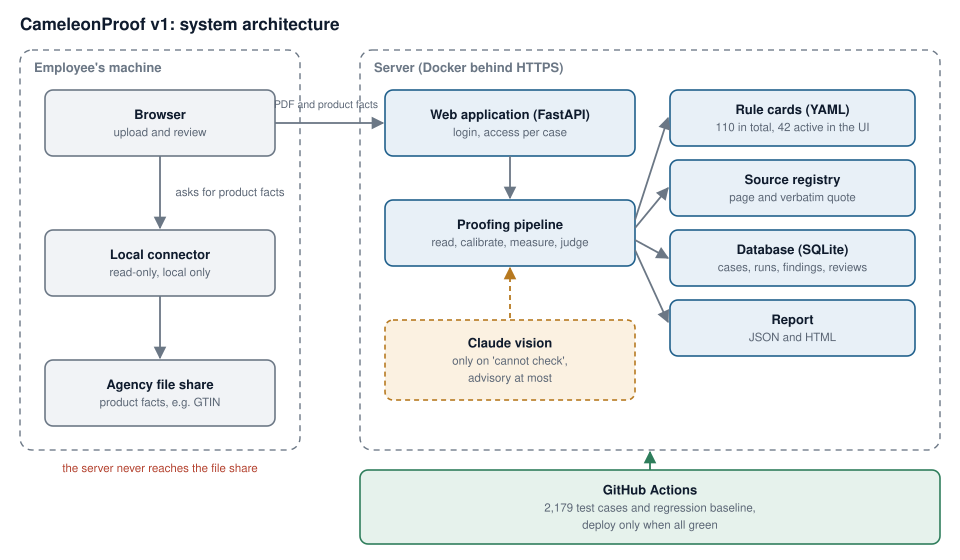
- Rules are data, not code. 110 rule cards in YAML with thresholds, conditions and source IDs. 42 barcode rules are switched on in the interface. For 40 of them, a test looks up the citation in the source document itself.
- Python and FastAPI with login and per-case access. PyMuPDF reads the PDF, zxing-cpp decodes the barcode, and Tesseract is the fallback when text is outlined. Results are stored in SQLite.
- 2,179 automated test cases and a regression baseline of 1,110 locked results on 10 real designs. GitHub Actions deploys only when everything is green.
- AI in one place only. Claude vision suggests where the barcode sits when layout analysis returns "cannot check". The answer can at most be advisory.
The server must never be able to reach the agency's file server. Product facts such as the GTIN are fetched instead by a small program on the employee's own machine, which can only read and only answers locally.
The system never says "approved". If all automated checks find nothing, the verdict is "awaiting manual confirmation, not ready for production". A person can settle points that need judgement, but cannot overrule a verdict the system has measured.
Version 1 was deployed to a server in September 2026 but was not taken into use by the agency.
4 · The audit · August to October 2026
Lots of green tests did not mean the system caught errors
As the system grew, I set agents to audit it: Where can the system say "pass" without reason? Can a rule convict at all? What does the code actually do? The audits found what the test count could not show.
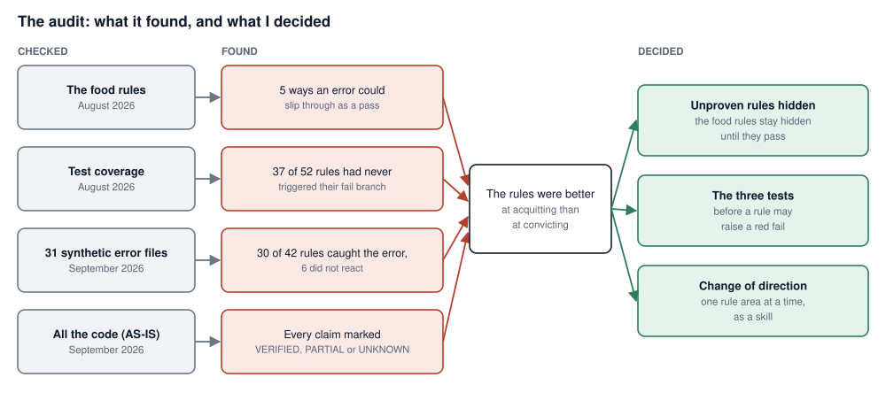
The audit of the food-labelling rules found five ways an error could slip through as a pass. One example: the net quantity was "found" in the nutrition table's "per 100 g". Another: allergen emphasis passed simply because an ingredient list existed. All five were disarmed.
- Known false passes on barcodes went from 5 to 0.
- Barcode cards without a verified source went from 33 of 41 to 3 of 42.
- The 10 real designs went to print, but nobody has verified them independently. They are a baseline that catches unintended changes, not an answer key.
- The AS-IS audit in September went through all the code and marked every claim VERIFIED, PARTIAL or UNKNOWN. The analysis of what a full system must know was then checked in an independent review.
A rule may raise a red fail only after it has passed three tests: no false fails on approved files, seen failing at least once, and the catch rate is measured. The food-labelling rules are hidden as unproven until they pass.
5 · New design and change of direction · October to November 2026
A TO-BE that was never built, and why that was right
After the audit I settled 15 decisions in a structured round of questions and answers and wrote a TO-BE with 12 modules. It described version 2 as a further development of the web system. Three of its key ideas:
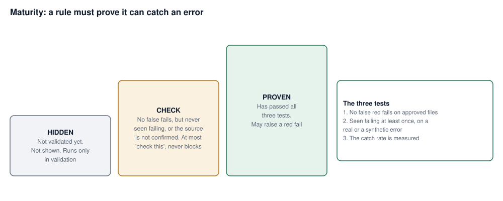
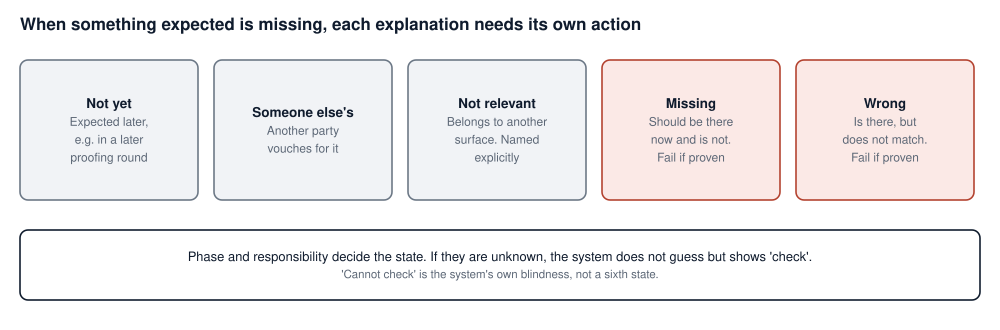
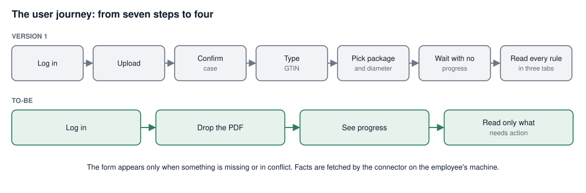
Change of direction. I do not wait for an interview or a review at the agency before building. Instead, one rule area at a time is built as a Claude skill, and we learn from each one. The TO-BE principles come along: the three tests, the statuses, nothing is ever called "approved", and client practice is kept apart from the standard.
Rule-based requirements first: law, standards and labelling schemes. Layout and client rules come later. An area is not chosen only by how often it appears in proofs, but also when it is checked by hand today without being mentioned.
6 · Version 2 today
One skill per rule area, with measurements in code and explanations from AI
Each area is a Claude skill: instructions for the model, a measuring script in Python and a source list with sections and page numbers. The script measures and sets the status. The model looks at the images, asks for what is missing and explains the result to the designer.
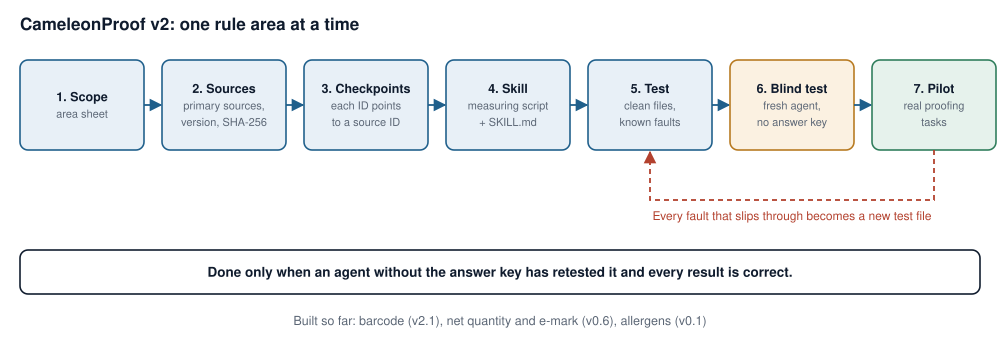
A fix is only done when a fresh agent that has not seen the answer key has retested it. Whoever built an area does not do its source check.
Demo: the barcode skill on a made-up label
The label was made for the demo with two errors that the skill does not know about in advance: the code is too short, and it sits too close to the edge. The images and the note come from a real run of the public edition. The skill answers in Danish, because its users are Danish designers.
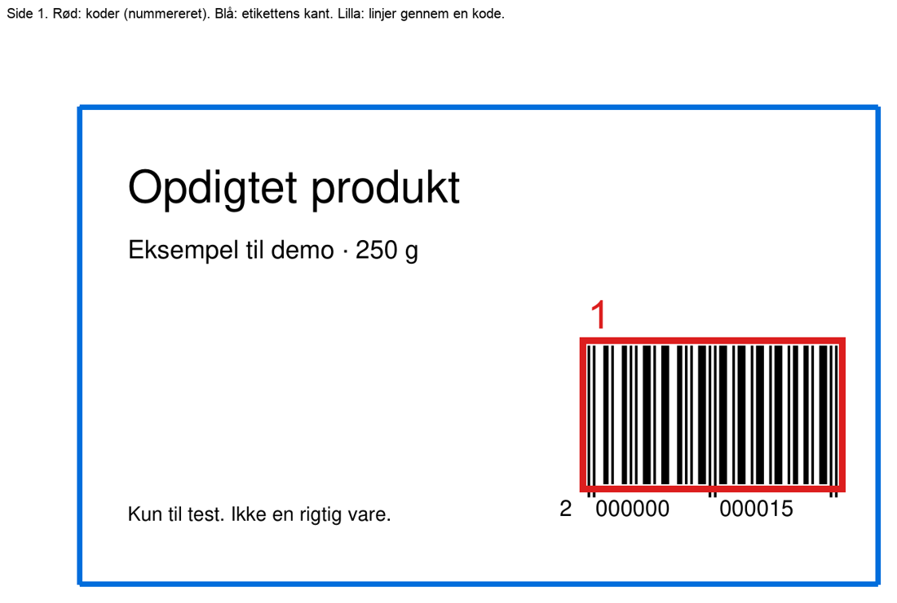
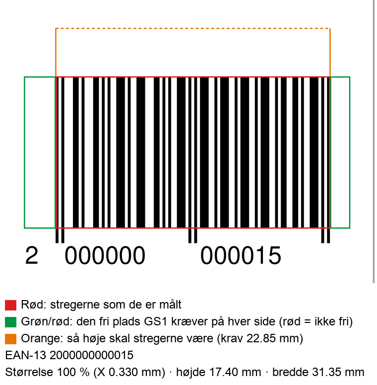
Must fix
RETBarcode height (SK-02). Measured 17.40 mm. GS1 requires at least 22.85 mm at this size, per table 5-44. The measurement can be off by about 0.05 mm, so even with that uncertainty the code is too short.
Needs your judgement
VURDERDistance to the edge (SK-11). 5.0 mm from the label edge. GS1 says at least 8 mm "where possible", so it is not an absolute requirement.
VURDERGTIN (VD-01). Valid check digit, but only product data can say whether it is this product's number.
No findings on the checked points
INGEN_FUNDSize, guard bars, quiet zones, gap to the digits, digit size and content, contrast. That is not an approval.
The full note, the measurements and the images are in stregkodekorrektur/eksempel.
Three places in the code
Every check points to a source. Each check in the script has a checkpoint ID, a source ID and its place in the GS1 standard. So every finding in the report can be looked up.
TJEKPUNKT = {
"stoerrelse": ("SK-01", "K-01", "GS1 v26 tabel 5-44 (5.12.3.1)", "GS1"),
"hoejde": ("SK-02", "K-02, K-03", "GS1 v26 tabel 5-44 med fodnote (**), 6.3.3.4", "GS1"),
"kant": ("SK-11", "K-09, K-10", "GS1 v26 6.3.3.3 (når muligt), 6.2.3.3", "GS1"),
...
}scripts/maal.py, line 113. The code is in Danish, like its users.
Measurement uncertainty decides the status. If the code is too short even after subtracting the uncertainty, it is RET (must fix). If it is just under the requirement but within the uncertainty, it is VURDER (judge). A designer should not get a red error on a file that may be correct.
if h + TOL_MM < krav_h * 0.998: # too short, even with the uncertainty
st = ret
elif h < krav_h * 0.998: # just under, but within the uncertainty
st = VURDER
else:
st = INGEN_FUNDscripts/maal.py, line 1046. Shortened. TOL_MM is 0.05 mm, tested on 14 vector PDFs with a known answer key.
"No findings" is not an approval. The report lists the points checked without findings, and next to them everything that was not checked.
# INGEN_FUND er ikke en godkendelse. (No findings is not an approval.)
resultat["ingen_fund_paa"] = sorted({f"{t['tjekpunkt']} {t['navn']}" for t in alle
if t["status"] == INGEN_FUND and t.get("tjekpunkt")})
resultat["ikke_tjekket"] = IKKE_TJEKKET + [...]Status of the three areas
| Area | Version | Tested |
|---|---|---|
| Barcode (GS1) | 2.1 | Regression on 45 files. The measurement uncertainty tested on 14 vector PDFs. A review against GS1 found ten wrong references, which were fixed and checked by an independent agent |
| Net quantity and ℮-mark | 0.6 | The first blind test found 12 of 14 error variants and raised no false RET on 6 error-free files. Measurements were at most 0.037 mm off an independent agent's measurement |
| Allergens | 0.1 | The first test round found 8 of 10 error files. The second round missed two new variants. They were fixed and retested by a new agent |
The public edition of the barcode skill has only the GS1 layer. Client practice and the agency's templates have been taken out. It gives the same measurements and statuses as the internal edition on all 20 test files, and its 8 automated tests pass.
7 · How I work
The agents write the code. I stand behind what the system claims
I have a cand.merc. (MSc in Economics and Business Administration), not a degree in programming. The code and most documents in the project are written by AI coding agents, mainly Claude Code. In version 1, Claude is a co-author of 133 of 175 commits. My part is the problem, the requirements, the decisions and the verification.
| What | Who | |
|---|---|---|
| Decided | Problem and scope, which areas come first, the status model, security and data access, test method, error margin, what AI may and may not do | Me |
| Built | Code, tests, reports, server setup and documentation | AI coding agents from my written directives |
| Verified | Results on known files, audits, blind tests and source checks | Me, with independent agents that have no answer key |
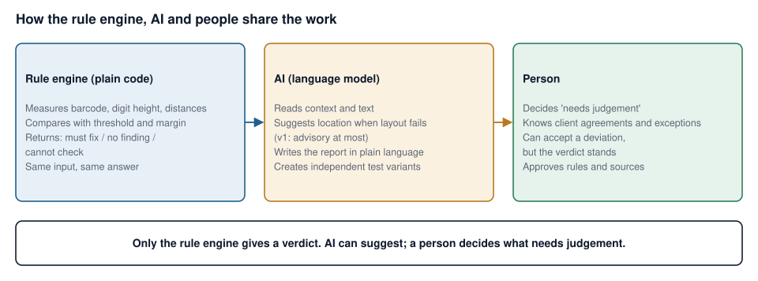
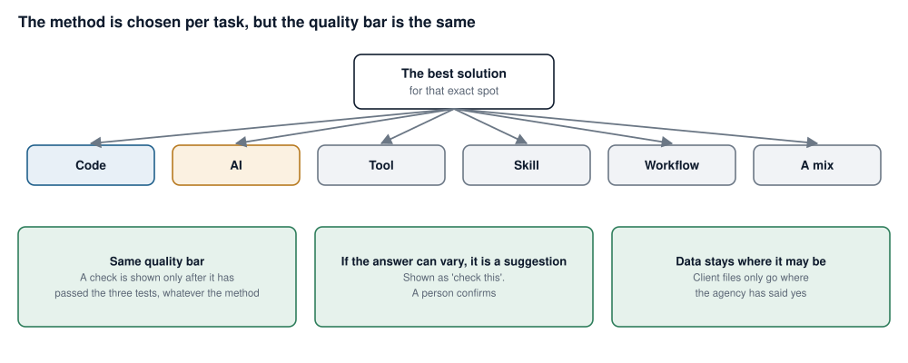
Decision log
My own decisions, as they are dated in the project's files. Decisions based on the agency's or its clients' practice are left out.
| Date | Decision | Why, and what happened |
|---|---|---|
| 9 Jul 2026 | The agency's own files first | That is what proofing actually runs on. Other formats take a more cautious path with honest "cannot check" instead of guesses |
| 9 Jul 2026 | Never "approved" | With no findings, the verdict is "awaiting manual confirmation". A person can confirm, but not overrule a measured verdict |
| 7 Aug 2026 | Real designs are a baseline, not an answer key | They went to print but were not verified independently. That led to tests with synthetic errors that show whether a rule can convict |
| 17 Sep 2026 | The system never issues the agency's print approval | Approval is the agency's responsibility, also when the system can later suggest fixes |
| 17 Sep 2026 | Not tied to one client | It starts in one place, but the architecture must not be bound to it |
| 21 Sep 2026 | The server never reaches the file server | A read-only program on the employee's machine fetches facts locally. A compromised server cannot reach the archive |
| 26 Sep 2026 | The edge is measured to the actual die line | Also on round and shaped labels. Under 8 mm is advisory. If the code runs over the edge, it is an error |
| Oct 2026 | The three tests | A rule may raise a red fail only after passing them. The food-labelling rules were hidden as unproven |
| Oct 2026 | Code for numbers, AI for language | Measurement and geometry in plain code. AI suggests, and a person confirms |
| 21 Nov 2026 | Change of direction to skills | One rule area at a time instead of a new large web system. We learn from each area |
| 21 Nov 2026 | Rule-based requirements first | Law, standards and labelling schemes. Layout and client rules later |
| 21 Nov 2026 | Areas are not chosen by frequency alone | What is checked by hand today without being mentioned is also worth automating |
| 22 Nov 2026 | Retest by a fresh agent | A fix is only done when an agent without the answer key has tested it again |
| 22 Nov 2026 | Always state the uncertainty | 0.05 mm, said so a designer understands it. Close to the limit is VURDER, not RET |
8 · Status and limitations
What works, and what does not yet
The system is under continuous development and is being piloted on real proofing tasks at Cameleon. There are no pilot results to show yet.
- Everyday use: Version 1 was not taken into use. Version 2 is not yet part of day-to-day proofing.
- The agency's sign-off: No area has been reviewed by a specialist at the agency. Checkpoints and sources are my and the agents' work, checked against the primary sources.
- Coverage: Only rule-based requirements in the areas named. Client requirements and layout are not included.
- Testing: The measurement uncertainty has been tested on vector PDFs, not on image files, printed files or with a verifier.
- Business value: Fewer errors, fewer extra rounds and more time for work that needs judgement. None of it is measured yet. The pilot should produce the first numbers.
The code, the rule base and the agency's files in the full system are confidential and not included here. The public code is shown as a work sample. All rights reserved.